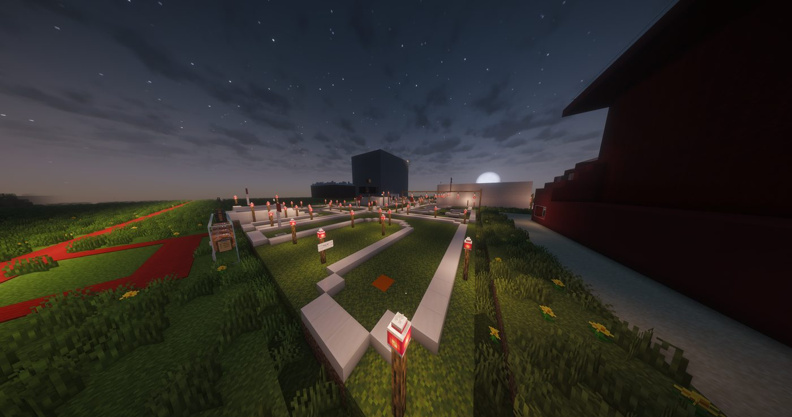

Mini Golf v2 Preview Revealed
New ball physics, a massive shop overhaul, career tracking, tournaments, and practice mode — plus the newspaper returns LIVE

The Biggest Mini Golf Update Yet
After the success of the open beta and launch, MGLEPC has revealed the first preview of Mini Golf v2. The update brings improved ball movement and collisions, a completely redesigned shop with cosmetics and unlockables, a career system tracking games played and best scores, a full tournament system with brackets and season events, and a new Practice Mode for learning courses. Officials say v2 transforms Mini Golf from a simple attraction into a full competitive experience.
Read full story →Missed an edition?
Read past front pages and every article in the GXY Newspaper archive.
Major August Releases Ahead
August 1 brings BreachPoint, Mob Arena, and BrainSurge all at once. Xscape Rooms and MiniGame Speedway follow later. Read notice →